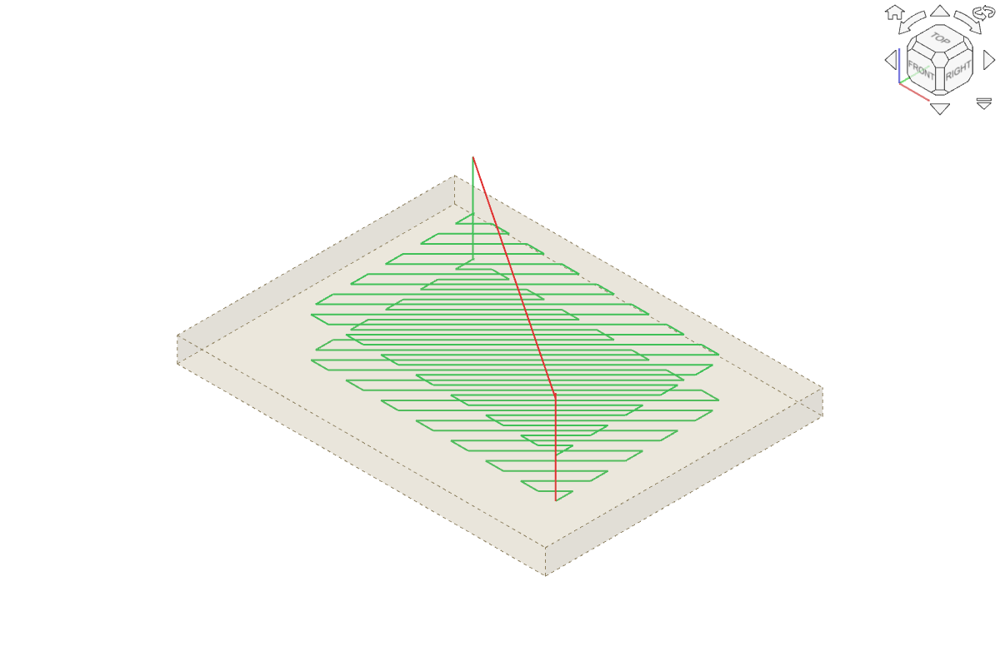
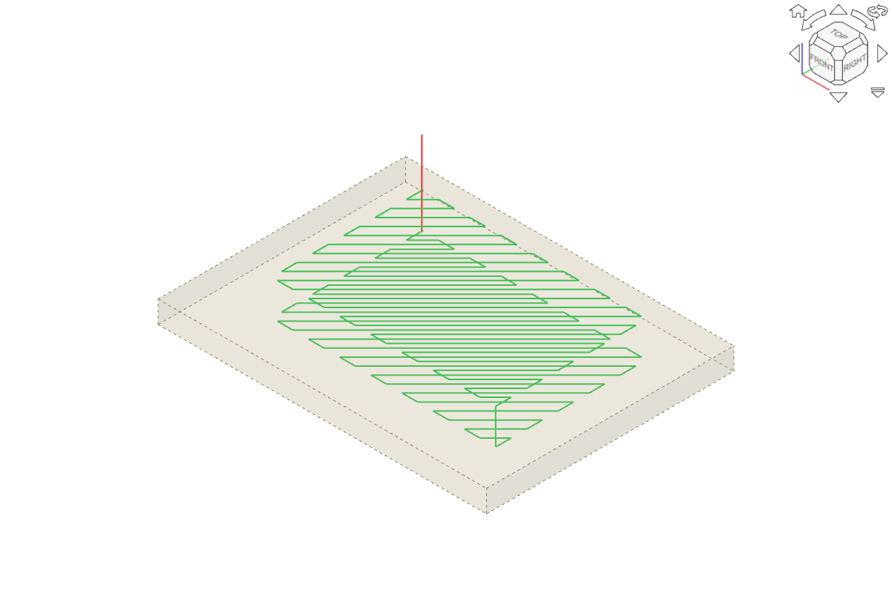

CAM unit tests with the PR applied: no verdict


start = self.endVector, so Path.fromShapes begins at the nearer end of the zigzag.reverseOpenWire (start an open wire from its last vertex) is now set only for Climb with Line or Grid; it used to apply to ZigZag too.setParamsDebug.| File / op | Setting | main | PR |
|---|---|---|---|
Author's zigzag_issue.FCStd, Pocket_Shape (2 levels) |
ZigZag, Climb (file's setting) | 109 cmds, rapid 160.03, 3 retracts, level 2 starts at (12.57, 47.23) = same corner as level 1 | 107 cmds, rapid 88.88, 2 retracts, level 2 starts at (63.36, 13.18) = where level 1 ended |
| same | ZigZag, Conventional | rapid 175.87, 3 retracts | identical to Climb on PR (rapid 88.88, 2 retracts) |
| Plate with 70x50x12 pocket, 14x14 island (top below part top), StepDown 3 (4 levels + final), 6 mm tool: PocketIsland | ZigZag Climb | 408 cmds, rapid 714.53, 11 retracts | 400 cmds, rapid 284.12, 7 retracts |
| same, two floors (main pocket + 6 mm-deep second pocket): PocketTwo | ZigZag Climb | rapid 557.95, 10 retracts | rapid 298.41, 8 retracts |
| same plate, MillFace on the top face, 3 levels | ZigZag Climb | rapid 337.37, 4 retracts | rapid 102.62, 2 retracts |
| PocketIsland + FinishingPasses 1 (the ZigZagOffset replacement) | ZigZag Climb | rapid 838.33, 16 retracts | rapid 413.62, 12 retracts; finishing pass still last |
| all three ops | Offset, Helix, Line, Grid, No clearing x Climb/Conventional | - | identical (md5 of G-code) |
| Gouge check (flat end mill vs model), PocketIsland/PocketTwo, with and without finishing pass | no gouges | no gouges |
Island: each level is two zigzag wires (left and right of the island); on the PR each level and each wire starts at the end nearest the previous one, feed length drops 42 mm on PocketIsland.
Unit tests: FreeCADCmd -t TestCAMApp --safe-mode: Ran 1990 tests, OK (skipped=13, expected failures=4). No test added for the ZigZag start.
Screenshots: main vs PR on the author's file (main: rapid back across the pocket to the same start corner; PR: plunge straight down at the end of level 1).